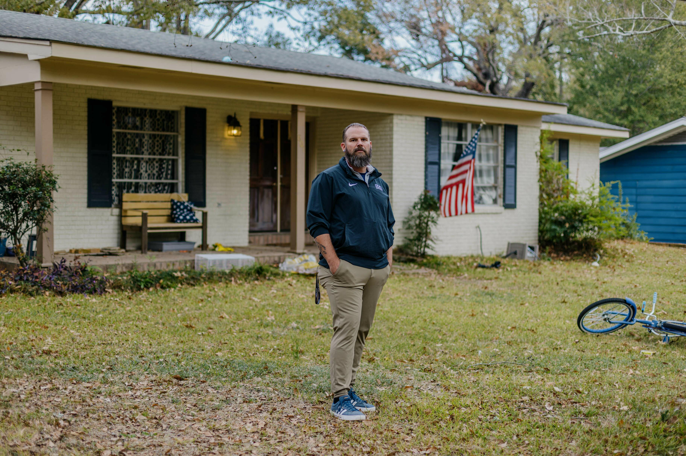

New developments in VA home loan assistance are raising questions for American veterans.
Thousands of American veterans with VA-backed home loans are facing questions about mortgage payments, loan modifications and financial assistance following changes to the Department of Veterans Affairs (VA) home loan servicing system.
A new investigation published by NPR on October 30, 2026, reports that thousands of veterans experienced higher monthly mortgage payments after the Trump administration ended a key home-loan assistance programme known as Veterans Affairs Servicing Purchase (VASP).
The report raises concerns about how veterans experiencing financial hardship can keep their homes when they fall behind on mortgage payments.
However, the situation also includes a newer assistance option: the VA Partial Claim Program, which officially launched in June 2026.
Here is what veterans and homeowners need to understand about the reported changes, the programmes involved and the available relief options.
Key facts at a glance
| Detail | Information |
|---|---|
| Primary topic | Trump administration veterans loan changes |
| VASP programme ended | 2025 |
| Partial Claim Program launched | June 15, 2026 |
| Key investigation | NPR, October 30, 2026 |
| Housing executive order | October 22, 2026 |
| VA contact | 877-827-3702, option 6 |
What Are the Trump Administration Veterans Loan Changes?
The phrase "Trump administration veterans loan changes" refers to developments affecting the way the Department of Veterans Affairs handles certain home-loan assistance and mortgage repayment situations.
One of the most significant developments involves the shutdown of the VASP programme.
VASP was designed to help eligible veterans experiencing serious financial difficulties by allowing the VA to purchase qualifying defaulted VA-backed loans and provide a more affordable repayment arrangement.
According to NPR's October 30 investigation, the programme's shutdown left some veterans with fewer options when trying to resolve mortgage defaults.
The VA has continued to offer other forms of assistance, including repayment plans, loan modifications and the newer Partial Claim Program.
What Happened to the VASP Program?
The Veterans Affairs Servicing Purchase (VASP) programme was introduced to help veterans who had fallen behind on their mortgage payments.
Under this programme, the VA could purchase eligible defaulted VA-backed home loans from mortgage servicers. This provided a route for qualifying borrowers to receive modified loan terms and work toward keeping their homes.
However, the Trump administration ended the programme in 2025.
NPR's investigation published on October 30, 2026, examined what happened to veterans who needed mortgage assistance after the programme ended.
The investigation found:
- More than 15,000 veterans experienced monthly payment increases of at least $150 after receiving loan modifications.
- More than 700 veterans experienced increases of $1,000 or more per month.
- Approximately 63% of veterans receiving loan modifications were affected by payment increases.
- By comparison, the investigation found payment increases in approximately 2% of modifications involving loans guaranteed by Fannie Mae and Freddie Mac.
Why Are Some Veterans Paying More Every Month?
Mortgage loan modifications are generally intended to help homeowners who are struggling financially.
When borrowers fall behind on their payments, lenders may modify loan terms to help them catch up and avoid foreclosure.
However, the situation can become more complicated when interest rates are higher than the original mortgage rate.
According to NPR, some veterans who previously had lower-interest VA-backed mortgages received modified loans with higher interest rates after the VASP programme ended.
This resulted in increased monthly payments for some borrowers.
For example, NPR reported the case of Army veteran Scott Boyd, whose modified mortgage payment increased by approximately $1,181 per month.
His situation illustrates how a loan modification can sometimes create a greater financial burden instead of reducing it.
What Is the VA Partial Claim Program?
The VA Partial Claim Program is a newer mortgage assistance option introduced to help eligible veterans avoid foreclosure.
The Department of Veterans Affairs officially launched the programme on June 15, 2026.
It was authorized under the VA Home Loan Reform Act, which President Donald Trump signed into law on July 30, 2025.
Here is how the programme works:
- Identify eligible borrowers: Mortgage servicers identify veterans who are behind on their mortgage payments and may qualify.
- Trial payment period: Eligible borrowers are placed on a three-month trial payment plan.
- Bring the mortgage current: If the veteran successfully completes the trial period, the servicer pays the overdue mortgage amount.
- VA assistance: The VA reimburses the mortgage servicer for that amount.
- Repayment: The amount is repaid to the VA when the mortgage is paid off, refinanced or the property is sold.
The programme is designed to help eligible veterans bring their mortgages current without immediately losing their homes.
Eligibility and individual loan circumstances matter, so borrowers should contact their mortgage servicer or the VA for details.
What Other Mortgage Assistance Options Are Available to Veterans?
The VA identifies several home-retention options for veterans experiencing mortgage difficulties.
| Assistance option | General purpose |
|---|---|
| Repayment Plans | Help borrowers catch up on overdue payments |
| VA Traditional Loan Modifications | Change mortgage terms to address payment difficulties |
| 30-Year Loan Modifications | Adjust repayment over a longer period |
| 40-Year Loan Modifications | Provide an extended repayment period where eligible |
| VA Partial Claim Program | Help eligible borrowers bring overdue mortgages current |
| Disaster Modifications | Provide assistance in qualifying disaster-related situations |
These options are not automatically available to every borrower. Eligibility depends on the loan, financial circumstances and applicable VA requirements.
Did Trump Sign a New Housing Executive Order in October 2026?
Yes. On October 22, 2026, President Donald Trump signed an executive order titled Decreasing Housing Costs for the American People.
The order includes several housing-related measures, including:
- Directing the Department of Veterans Affairs and the Department of Agriculture to reduce interest rates on certain single-family direct home loans, subject to applicable law and available funding.
- Establishing a task force focused on manufactured housing.
- Directing work on mortgage insurance cancellation for qualifying borrowers.
- Expanding certain title-insurance alternatives for eligible refinancing transactions.
What Should Veterans With VA Home Loans Do Now?
Veterans who are struggling with mortgage payments should not assume that all assistance programmes have disappeared.
Here are practical steps to consider:
- Contact your mortgage servicer: Ask which VA home-retention options are available for your loan.
- Ask about the Partial Claim Program: Find out whether you meet the programme's eligibility requirements.
- Review loan modification terms: Understand the proposed interest rate, monthly payment and total repayment obligations before agreeing.
- Contact the VA: Veterans who are having difficulty reaching a resolution with their mortgage servicer can contact the VA at 877-827-3702, option 6.
- Keep written records: Save mortgage statements, payment notices and communications with your servicer.
Veterans should review their individual circumstances before accepting a loan modification or refinancing arrangement.
What Has the VA Said About Mortgage Assistance?
In response to questions about veteran mortgage assistance, the VA said it helps thousands of veterans retain homeownership or avoid foreclosure through programmes such as payment forbearance, loan modifications and individualized repayment plans.
The VA also reported that it worked with mortgage servicers to help 173,000 veterans with home-retention options during fiscal year 2025.
This is important context because the end of VASP does not mean that every VA mortgage assistance programme has ended.
Final Thoughts
The Trump administration veterans loan changes represent a significant shift in how VA home-loan assistance is delivered. The end of the VASP programme has created challenges for some veterans, while the newer Partial Claim Program and other VA options continue to provide relief pathways.
Veterans with VA-backed mortgages should stay informed, contact their servicer directly and explore all available options before making financial decisions. The situation continues to develop, and readers should check official VA channels for the latest updates.
This article reflects reporting available on October 30, 2026. It should be updated if the VA announces further programme changes.